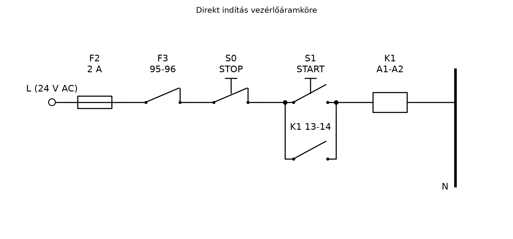
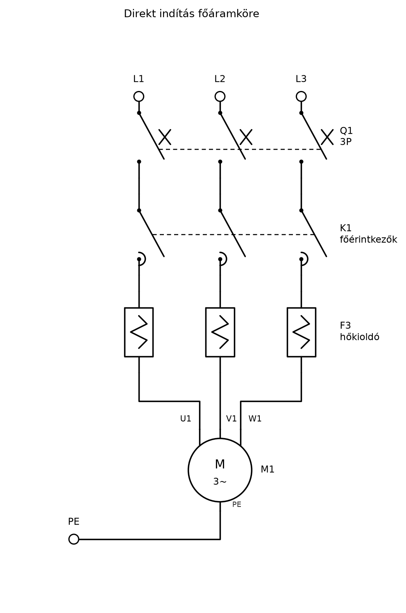
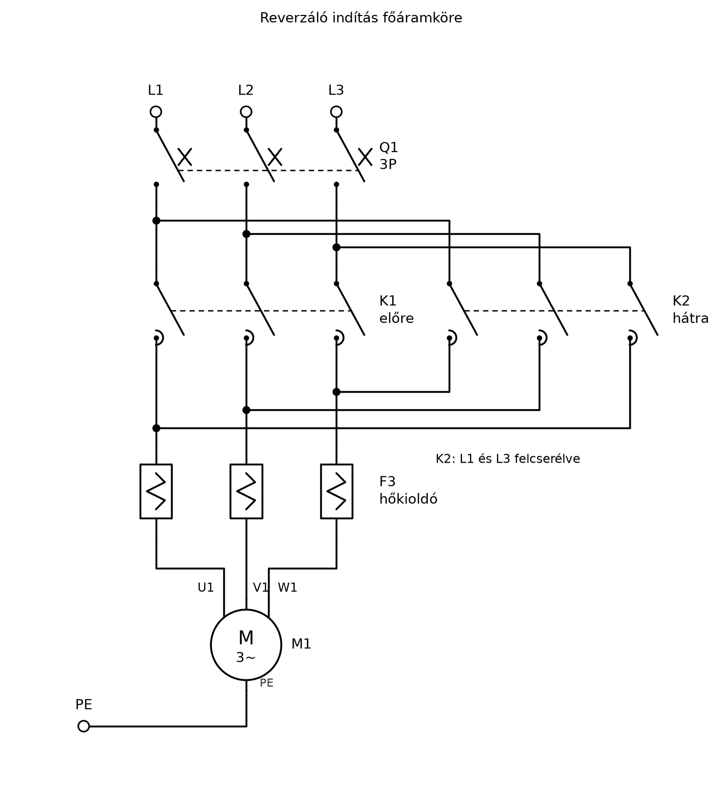
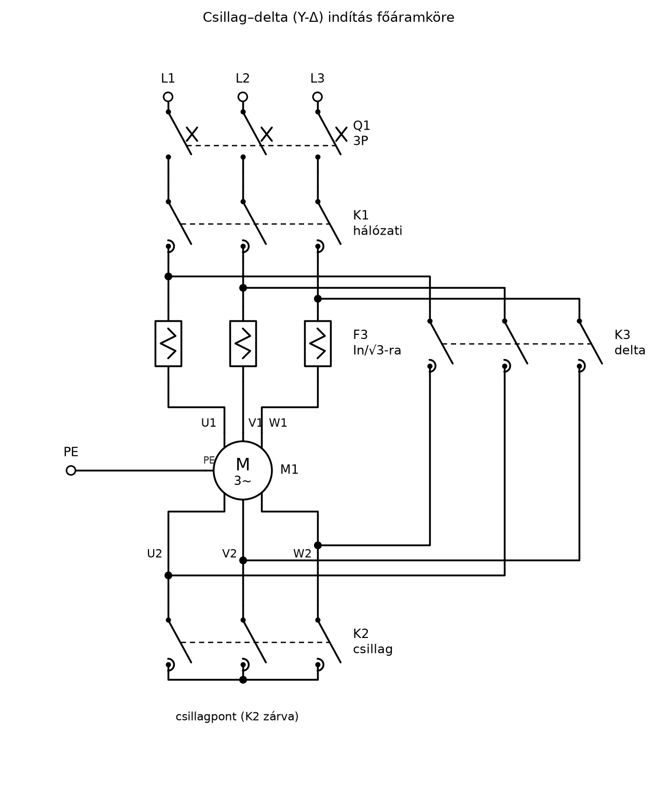

Statikus változat (mint a PDF-ben)
Egy kapcsolószekrényben a motor nem indul, a mágneskapcsoló zúg, a biztosító leold, vagy a forgásirány rossz: ilyen helyzetekben a szerelőnek a kapcsolási rajz alapján gyorsan meg kell találnia a hibát. A tanműhelyben a vezérlések építése nem egyszerűen „vezetékek összekötése”: a rajz–valóság–mérés hármas elsajátítása dönti el, hogy a kész kapcsolás elsőre működik-e, és hogy a hibát meg tudjuk-e találni feszültség alatt nem tapogatva. Ebben az alfejezetben a három legalapvetőbb motorvezérlést építjük meg fokozatosan: a direkt (önfenntartásos) indítást, a reverzáló (irányváltó) kapcsolást és a csillag–delta (Y-Δ) indítást. Mindegyiknél az építés előtti ellenőrzés, a bekötési logika, a kipróbálás és a dokumentálás a hangsúly.
A direkt indítás a legegyszerűbb motorvezérlés: egy mágneskapcsoló (K1) kapcsolja a motor főáramkörét, a vezérlőáramkörben pedig az indító nyomógomb egy pillanatnyi zárása behúzza K1-et, és egy K1 segédérintkező (13–14) önfenntartja a kapcsolást. A stop nyomógomb (S0) sorosan bontja az áramkört.

A rajzon a vezérlőáramkör fázisa (itt tanműhelyben 24 V AC, de iparban gyakran 230 V AC) a bal oldalról indul. Az F2 vezérlőbiztosító és az F3 hőkioldó 95–96 bontóérintkezője után az S0 NC stop nyomógomb következik. Amikor a start (S1) nyomógombot megnyomjuk, a K1 tekercs áramot kap, behúz, és a 13–14 segédérintkezője párhuzamosan zárja az S1-et. A start gomb elengedése után az áram a 13–14 érintkezőn keresztül folyik tovább, így a kapcsolás „beragad”. A stop megnyomásával megszakítjuk a tekercs áramát, és a kapcsolás kiesik.
A főáramkörben a K1 főérintkezői kapcsolják a motort; a hőkioldó (F3) a motor vezetékeiben méri az áramot, és túlterhelésnél a vezérlőkörbe kötött 95–96 bontóérintkezőjével ejti K1-et:

Szabály. Minden vezérlésépítést ugyanazzal a hármas módszerrel végezzünk: rajz → valóság → mérés. Először a rajzot értelmezzük és a kapcsolást bekötjük, majd szemrevételezéssel és tápfeszültség nélküli mérésekkel ellenőrizzük, végül feszültség alatt működési próbát végzünk. Ez megfelel a gépvillamos berendezések szerelésénél előírt szemléletnek, amelyet az Ellenőrzés, mérés és felülvizsgálat fejezetben is használunk (vö. MSZ EN 60204-1 ellenőrzési előírásai; ellenőrizendő).
Biztonsági korlát. A feladat tanműhelyi (törpefeszültségű) környezetre vagy jogosult oktató felügyeletére vonatkozik; hálózati feszültségen önállóan ne végezd. Minden szerelés előtt feszültségmentesítünk, és betartjuk az öt biztonsági szabályt: lekapcsolás, visszakapcsolás elleni biztosítás, feszültségmentesség ellenőrzése, földelés és rövidre zárás, szomszédos feszültség alatti részek lefedése.
Gyakorlat. A direkt indítás vezérlőáramkörét az alábbi anyagokkal építjük fel:
| Megnevezés | Rajzjel | Példa típus / érték |
|---|---|---|
| Mágneskapcsoló | K1 | 3 pólusú főérintkező, 1 NO segédérintkező (13–14), 24 V AC tekercs |
| Nyomógomb NC | S0 (STOP) | piros, bontó érintkező |
| Nyomógomb NO | S1 (START) | zöld, záró érintkező |
| Vezérlőbiztosító | F2 | 2 A, 24 V AC körhöz |
| Hőkioldó (motorvédő relé) | F3 | 95–96 bontó, a motor névleges áramára állítva |
| Jelzőlámpa (opcionális) | H1 | 24 V AC |
Recept. Direkt indítás bekötési algoritmusa:
A reverzáló kapcsolás két mágneskapcsolót használ: K1 az előre, K2 a hátra irányt kapcsolja. A főáramkörben a két kapcsoló két fázist felcserél, ezért K1 és K2 egyidejű behúzása tilos, mert két fázis közvetlenül zárlatba kerül. A reteszelés két szintű: villamos reteszelés (a másik kapcsoló NC segédérintkezője a tekercs áramkörében) és mechanikus reteszelés (a két mágneskapcsoló közé szerelt mechanikus blokk).
Kapcsolási logika:
A főáramkört és a vezérlőkört az alábbi két rajz mutatja. A főkörben K2 az L1 és az L3 fázist felcseréli; a vezérlőkörben a két start ág közös része F2, F3 95–96 és S0, az egyes ágakban az önfenntartó 13–14 a start gombbal párhuzamos, a másik mágneskapcsoló 21–22 bontója pedig a tekercs előtt sorosan reteszel.

A HTML-kiadásban a vezérlőkör kipróbálható: az S1, S2, S0 gombokkal a mágneskapcsolók behúznak és elengednek, az áramot vivő ág kiemelődik, a „Mindkét start egyszerre” próba pedig megmutatja, hogy a villamos reteszelés miatt csak az egyik mágneskapcsoló húzhat be.
Ellenőrzés tápfeszültség nélkül. Mielőtt feszültséget adnánk, multiméterrel folytonosságot mérünk:
Az Y-Δ indítás elvét a Csillag–delta indítás vezérlése alfejezetben már megismertük. Most a gyakorlati építés a cél. A vezérlőáramkörben három mágneskapcsoló van:
Reteszelés: K2 és K3 soha nem húzhat egyszerre. A főáramkörben ez fáziszárlatot okozna, ezért villamos reteszelés (K2 NC a K3 áramkörében, K3 NC a K2 áramkörében) és mechanikus reteszelés is szükséges.
A csillag–delta indítás főáramkörét és vezérlőkörét az alábbi rajzok mutatják. A főkörben F3 a tekercsáramkörben van, ezért a motor névleges áramának -szorosára állítjuk; a vezérlőkörben START után K1 és K2 (csillag) húz be, KT méri az indítási időt, majd a késleltetve bontó 55–56 ejti K2-t, a késleltetve záró 67–68 behúzza K3-at (delta). A K2 és K3 21–22 bontói kölcsönösen reteszelnek.

A HTML-kiadásban a START gombbal indítható a folyamat, az átkapcsolási idő csúszkával állítható, és lépésről lépésre látszik, melyik mágneskapcsoló van behúzva; K2 és K3 egyszerre sosem kap feszültséget. Az időrelé kapocsszámai (55–56, 67–68) tipikus jelölések, a gyártói adatlap szerint ellenőrizendők.
Indítási sorrend:
Időrelé beállítása. Az átkapcsolási időt úgy kell beállítani, hogy a motor csillagban elérje a fordulatszámának 80–90%-át. Tipikus értékek: kis motoroknál 3–10 s, nagyobbaknál 10–30 s. A pontos időt az adattábla és a terhelés határozza meg; túl rövid idő esetén a motor még nem gyorsult fel, és nagy áramlökéssel vált deltába, túl hosszú időnél a motor csillagban melegszik. (ellenőrizendő: a konkrét motor gyártói adatlapja és a terhelési viszonyok).
Szabvány. A gépvillamos berendezések vezérléseire az MSZ EN 60204-1, a kapcsolókészülékekre és motorindítókra az MSZ EN 60947 sorozat vonatkozik. A vezérlési rajzokon az MSZ EN 60617 szerinti jelöléseket használjuk. A kapcsolások típusvizsgálati követelményeit, a reteszelés kialakítását és az érintkezők terhelhetőségét a gyártói adatlapok és a hatályos szabványok rögzítik (ellenőrizendő: aktuális kiadások).
A vezérlések építésénél a hibakeresés nem a feszültség alatti tapogatásról szól, hanem a tünet → hipotézis → mérés → ok → javítás → megelőzés láncolatról. Ezt az algoritmust használjuk később a gyakorlati vizsgán is (Gyakorlati vizsgafeladatok és hibakeresés, értékelési szempontok alfejezet).
Hibakeresési eset. Tünet: a reverzáló kapcsolás „előre” irányban működik, de „hátra” irányban a K2 mágneskapcsoló nem húz be, semmi nem történik (csend).
Dokumentáció. Minden megépített vezérlésről jegyzőkönyvet készítünk, amely tartalmazza: a kapcsolási rajz azonosítóját, az alkatrészek típusát és névleges adatait, a beállított időrelé-értéket, a mérési eredményeket (folytonosság, tekercsellenállás, szigetelés), és a működési próba eredményét. Ez a dokumentáció szolgál alapul a későbbi felülvizsgálathoz és a vizsgán a szóbeli bemutatáshoz.
Cél: megépíteni a direkt, reverzáló és Y-Δ vezérléseket tanműhelyi modellen, és tápfeszültség nélkül, majd feszültség alatt ellenőrizni.
Eszközök és anyagok: mágneskapcsolók (K1, K2, K3), időrelé, nyomógombok (NC/NO), vezérlőbiztosítók, multiméter, 24 V AC vagy DC tápegység (törpefeszültség), csatlakozó vezetékek, csavarhúzó, fogó, szigetelőszalag, kapcsolási rajz.
Biztonsági korlát. A feladat tanműhelyi (törpefeszültségű) környezetre vagy jogosult oktató felügyeletére vonatkozik; hálózati feszültségen önállóan ne végezd. A feszültségmentesítés öt szabályát minden szerelés előtt be kell tartani.
Recept – lépéssor a szereléshez:
Ellenőrzési pontok:
1. feladat (A). Rajzold le a direkt indítás vezérlőáramkörét kapcsolási rajzon, és nevezd meg az alkatrészeket, valamint a kapcsok jelölését.
2. feladat (A). Sorold fel a reverzáló vezérlésben használt kontaktusok típusait (NO/NC) és azok szerepét.
3. feladat (B). Egy Y-Δ indító vezérlőáramkörében a K1, K2, K3 mágneskapcsolók tekercsei egyenként 10 VA tartóteljesítményt vesznek fel 230 V AC-n, az időrelé 3 VA-t. Számítsd ki a vezérlőáramkör látszólagos teljesítményét és a tartóáramot. Mekkora legyen a vezérlőbiztosító árama, ha a tekercsek egyidejűleg legfeljebb ketten húznak be (K1+K2 vagy K1+K3)?
4. feladat (B). Tervezd meg a reverzáló vezérlés huzalozási rajzát: a K1 és K2 mágneskapcsolók tekercseit, a reteszelő NC érintkezőket és az önfenntartó NO érintkezőket. A rajzot írd le szövegesen vagy diagramblokkban.
5. feladat (C). Hibaelemzés: A Y-Δ vezérlésnél a start gomb megnyomásakor K1 behúz, de K2 nem húz be, a motor áll, és nem vesz fel áramot (lakatfogó: 0 A). Sorold fel a lehetséges hibákat, és írd le a hibakeresési lépéseket feszültségmentes állapotban.
6. feladat (D). Gyakorlati feladat: Építsd meg a direkt indítás vezérlőáramkörét 24 V AC törpefeszültséggel. Mérd meg a K1 tekercs áramát behúzott állapotban (24 V AC körben soros multiméterrel az A-tartományban – a mérőzsinór az A-aljzatban, mérés után vissza a V-aljzatba –, vagy mA-felbontású lakatfogóval). Ellenőrizd az önfenntartást: a start gomb elengedése után a kapcsolás maradjon behúzva. Dokumentáld a mérést: a mért feszültség, áram, tekercsellenállás.
Önellenőrzés – válaszok
Feladatok – megoldások
1. feladat (A). A kapcsolási rajz az alábbi áramutat tartalmazza: a 24 V AC fázisról az F2 biztosítón és az F3 hőkioldó 95–96 bontóján át az S0 NC stop nyomógomb 11. kapcsára, onnan (12. kapocs) az S1 NO start 13. kapcsára, onnan (14. kapocs) a K1 tekercs A1 kapcsára. A K1 önfenntartó NO érintkező (13) az S1 bemenetével közösítve, a (14) az S1 kimenetével és a K1 A1 kapcsával közösítve. A K1 A2 a nulla visszatérőre. A kapcsok: S0: 11–12 (NC, bontó; egyszerűsített jelöléssel 1–2), S1: 13–14 (NO, záró; 3–4), K1: A1–A2, 13–14. A bontó érintkező x1–x2, a záró x3–x4 kapocspárt kap (MSZ EN 60947-5-1; ellenőrizendő: aktuális kiadás).
2. feladat (A). A reverzáló vezérlésben a kontaktusok: - K1 NO 13–14: önfenntartó érintkező a start előre nyomógombbal párhuzamosan. - K2 NO 13–14: önfenntartó érintkező a start hátra nyomógombbal párhuzamosan. - K1 NC 21–22: reteszelő érintkező a K2 tekercs áramkörében. - K2 NC 21–22: reteszelő érintkező a K1 tekercs áramkörében. - S0 NC: stop nyomógomb, sorosan a teljes vezérlőáramkörben. - S1, S2 NO: indító nyomógombok.
3. feladat (B). Egyidejűleg legfeljebb K1+K2 vagy K1+K3 húz be, tehát két tekercs + időrelé. Látszólagos teljesítmény: . Áram: . A meghúzási teljesítmény a tartásinak többszöröse (adatlap), ezért a vezérlőbiztosító névleges árama ennél lényegesen nagyobb, például lomha 0,5–1 A (ellenőrizendő: gyártói adatlap és a vezérlőkör védelme).
4. feladat (B). A reverzáló huzalozás leírása: a fázis az F2 biztosítón és az F3 95–96 bontón át az S0 NC stop 11. kapcsára kerül. Az S0 12. kapcsa két ágra oszlik: az egyik ágon az S1 NO start (13–14) és a K1 önfenntartó NO 13–14 párhuzamosan, majd a K2 NC 21–22 reteszelőn át a K1 tekercs A1 kapcsára; a másik ágon az S2 NO start (13–14) és a K2 önfenntartó NO 13–14 párhuzamosan, majd a K1 NC 21–22 reteszelőn át a K2 tekercs A1 kapcsára. Mindkét tekercs A2 kapcsa a nulla visszatérőre csatlakozik. A mechanikus reteszelés a két mágneskapcsoló közé szerelt blokk.
5. feladat (C). Csak K1 behúzott állapotában a tekercsek kezdetei kapnak feszültséget, a végek (U2, V2, W2) nyitottak: zárt áramkör nincs, a motor áll, nem vesz fel áramot, és nem is zúg. Lehetséges hibák: - A K2 tekercs szakadt vagy nem kap feszültséget. - A K3 NC reteszelő érintkezője (21–22) szakadt. - Az időrelé csillagágban lévő érintkezője vagy a K2 tekercs ágának egy érintkezője rossz. - A K2 tekercs áramkörében laza kötés van. (Ha K1 és K2 behúz, de a motor zúg és nem indul, az más hiba: a K2 egyik pólusa nem zár, vagy fázis hiányzik.) Hibakeresés feszültségmentes állapotban: multiméterrel folytonosságot mérünk a vezérlő tápkapocs és a K2 A1 között a K1 kézzel behúzott állapotában. Ha nincs folytonosság, szakaszonként mérünk: a K3 NC érintkező, az időrelé érintkezője, a K2 tekercs ellenállása. Ha a tekercs ellenállása végtelen, a tekercs cseréje szükséges. Ha minden folytonos, a hiba a tápoldalon keresendő (biztosító, vezeték).
6. feladat (D). A mérés során a 24 V AC tápegységről behúzott K1 tekercs árama az adatlap VA-értékéből becsülhető: (pl. 7 VA / 24 V ≈ 0,3 A); a DC-ellenállásból nem számolható. A tényleges értéket a 24 V-os törpefeszültségű körben soros multiméterrel (váltakozó áramú A-tartomány, a mérőzsinór az A-aljzatban, mérés után vissza a V-aljzatba), vagy mA-felbontású lakatfogóval mérjük; a hajlékony (Rogowski-tekercses) áramváltós lakatfogó ilyen kis áramra nem alkalmas (ellenőrizendő: műszer-adatlap). A mért feszültségnek 24 V-nak kell lennie, a tekercsellenállásnak pedig a névleges értéknek megfelelőnek. Az önfenntartást úgy ellenőrizzük, hogy a start gombot megnyomjuk, elengedjük, és a kapcsolás továbbra is behúzva marad. A dokumentációban feljegyezzük a mért feszültséget, áramot, tekercsellenállást, és a működési próba eredményét.
A motorvezérlések építése a rajz–valóság–mérés hármas módszerével történik: a kapcsolási rajzot először bekötjük, majd tápfeszültség nélkül folytonosságméréssel ellenőrizzük, végül törpefeszültségen működési próbát végzünk. A direkt indításnál az önfenntartó érintkezőt (13–14) a start nyomógombbal párhuzamosan kötjük; a stop NC nyomógomb sorosan bont. A reverzáló kapcsolás két mágneskapcsolót használ, és a két irány egyidejű behúzását villamos (NC reteszelő érintkezők) és mechanikus reteszeléssel akadályozzuk meg, mert a fáziszárlatot okozna. Az Y-Δ indításnál három mágneskapcsoló (K1 hálózat, K2 csillag, K3 delta) és egy időrelé dolgozik: indításkor K1+K2 húz, majd az idő lejárta után K2 ejt, K3 húz; a K2 és K3 egyidejű behúzása tilos. A hibakeresés tünet → hipotézis → mérés → ok → javítás → megelőzés láncolatban történik, feszültségmentes állapotban. Továbbvitt eredmény. Az itt tanult rajzolvasási, bekötési és mérési módszert használjuk a Transzformátor- és gépmérések, a Frekvenciaváltó és lágyindító paraméterezése és a Gyakorlati vizsgafeladatok és hibakeresés, értékelési szempontok alfejezetekben; a dokumentációs fegyelem és a feszültségmentes hibakeresés minden későbbi gyakorlat alapfeltétele.